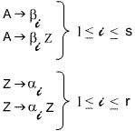

Устранение левой рекурсии.
Грамматика, содержащая левую рекурсию, не является LL(1)-грамматикой. Рассмотрим правила
A ® Aa (левая рекурсия в A)
A® a
Здесь a символ-предшественник для обоих вариантов нетерминала A. Аналогично грамматика, содержащая левый рекурсивный цикл, не может быть LL(1)-грамматикой, например
A® BC
B ® CD
C ® AE
Грамматику, содержащую левый рекурсивный цикл, можно преобразовать в грамматику, содержащую только прямую левую рекурсию, и далее, за счет введения дополнительных нетерминалов, левую рекурсию можно исключить полностью (в действительности она заменяется правой рекурсией, которая не представляет проблемы в отношении LL(1)-свойства). В качестве примера рассмотрим грамматику с порождающими правилами
S ® Aa
A ® Bb
B ® Cc
C ® Dd
C ® e
D ® Az
которая имеет левый рекурсивный цикл, вовлекающий A, B, C, D. Чтобы заменить этот цикл прямой левой рекурсией, упорядочим нетерминалы следующим образом: S, A, B, C, D.
Рассмотрим все порождающие правила вида
Xi ® Xj γ,
где Xi и Xj – нетерминалы, а γ – строка терминальных и нетерминальных символов. В отношении правил, для которых j ≥ i, никакие действия не производятся. Однако это неравенство не может выдерживаться для всех правил, если есть левый рекурсивный цикл. При выбранном нами порядке мы имеем дело с единственным правилом:
D ® Az
так как A предшествует D в этом упорядочении. Теперь начнем замещать A, пользуясь всеми правилами, имеющими A в левой части. В результате получаем
D ® Bbz
Поскольку B предшествует D в упорядочении, процесс повторяется, что дает правило:
D ® Ccbz
Затем он повторяется еще раз и дает два правила:
D ® ecbz
D ® Ddcbz
Теперь преобразованная грамматика выглядит следующим образом:
S ® Aa
A ® Bb
B ® Cc
C ® Dd
C ® e
D ® Ddcbz
D ® ecbz
Все эти порождающие правила имеют требуемый вид, а левый рекурсивный цикл заменен прямой левой рекурсией. Чтобы исключить прямую левую рекурсию, введем новый нетерминальный символ Z и заменим правила
D ® ecbz
D® Ddcbz
на
D ® ecbz
D ® ecbzZ
Z ® dcbz
Z ® dcbzZ
Заметим, что до и после преобразования D генерирует регулярное выражение
(ecbz) (dcbz)*
Обобщая, можно показать, что если нетерминал A появляется в левых частях r + s порождающих правил, r из которых используют прямую левую рекурсию, а s – нет, т.е.
A ® Aα1, A ® Aα2,..., A ® Aαr
A ® β1, A ® β2,..., A ® βs
то эти правила можно заменить на следующие:

Неформальное доказательство заключается в том, что до и после преобразования A генерирует регулярное выражение
(β1 | β2 |... | βs) (α1 | α2 |... | αr) *
Следует обратить внимание, что устранив левую рекурсию (или левый рекурсивный цикл), мы еще не получаем LL(1)-грамматику, т.к. для некоторых нетерминалов в правой части правил полученных грамматик существуют альтернативные левые части, начинающиеся с одних и тех же символов. Поэтому после устранения левой рекурсии следует продолжить преобразование грамматики к LL(1) виду.